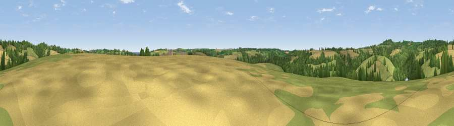

Viewpoint near Porth Navas
#31132 in England · top 63% of its area beats it · near Porth Navas · access?Where it is
The exact computed spot (SW 74475 27625). Click the marker for map links.
Public access: no public right of way or access land is recorded at this exact spot — it may be on private land. Computed from Natural England's CRoW access layer and OpenStreetMap rights of way — not the legal definitive map. Always verify locally.
The view, rendered

A 360° render of this exact spot computed from the terrain model, tree cover and land cover — summer colours, afternoon light, calibrated against photographs of famous viewpoints. Real trees, hedges and buildings will differ in detail.
The panorama
Grey silhouette: terrain skyline in each direction (720 bearings, Earth curvature and refraction included). Dashed green: skyline with trees (+15 m) and buildings (+8 m) as obstacles. Blue strip: how far the ground is visible on each bearing.
Where the view opens
Wedge length = distance to the farthest visible ground on that bearing (vegetation-aware). Rings at 10, 25 and 50 km.
What fills the view
45% grassland · 28% woodland · 26% cropland ·
Angular shares of the visible panorama (visual magnitude), not map area. Landscape diversity 0.49 (0–1 Shannon).
Key numbers
More beautiful places nearby
The staircase of upgrades: each row has a higher view potential than everything closer. Driving times are estimates from straight-line distance, calibrated against real road routing — check an actual route before setting out.
| Place | Direction | Drive | Score |
|---|---|---|---|
| Viewpoint near Porth Navas | NNE · 2 km | ~5 min | 61.0 |
| Viewpoint near Constantine | NW · 3 km | ~8 min | 66.7 |
| Viewpoint near Seworgan | NW · 4 km | ~10 min | 67.1 |
| Viewpoint near St. Keverne | SE · 6 km | ~12 min | 72.2 |
| Viewpoint near Porthoustock | SE · 9 km | ~18 min | 74.0 |
| Viewpoint near Four Lanes | NNW · 13 km | ~24 min | 74.3 |
| Viewpoint near Lanner | NNW · 13 km | ~25 min | 74.5 |
| Viewpoint near Ashton | W · 14 km | ~26 min | 81.3 |
50.10579, -5.15530 · source: screening · position refined by local search. Computed location — check access rights before visiting.